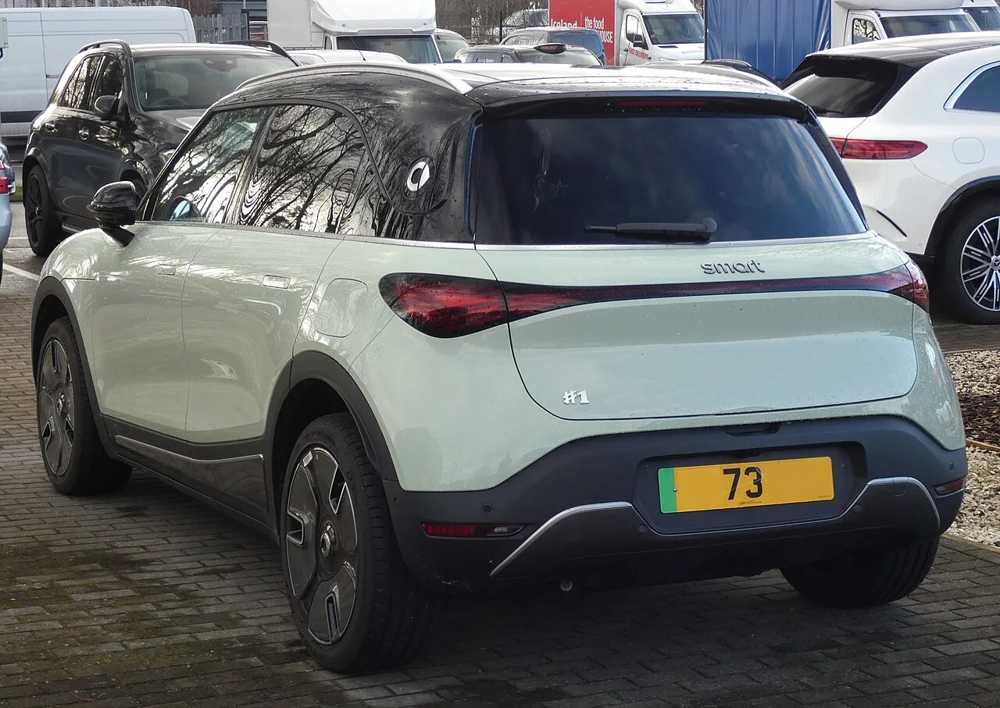
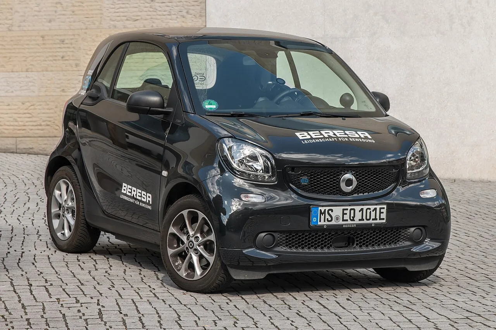

▲ 스마트 #1 — 신형 #2는 이 형제 모델의 디자인 언어를 이어받으면서도 더 실용적인 방향으로 다듬어질 예정이다
전 세계 여러 도시의 벽과 바닥에 뜬금없이 등장한 대형 숫자 '2' 벽화. 메르세데스-벤츠 디자인팀과 현지 아티스트들이 협업해 그려낸 이 작품들은, 사실 스마트의 신차 티저 캠페인이었습니다. 파리 모터쇼 출시를 앞두고 벌인 이 이색 마케팅의 정체는 신형 '#2'. 브랜드의 상징이었던 포투(fortwo)의 뒤를 잇는 새로운 전기차입니다.
1. 왜 하필 '숫자 2' 벽화였나
스마트의 이번 티저 캠페인은 단순한 광고판이 아니라, 도시 곳곳에 실제로 그려 넣은 대형 벽화 형태였습니다. 베를린과 부에노스아이레스, 홍콩, 멜버른, 파리, 상하이까지 — 서로 다른 대륙의 도시들에 동시다발적으로 등장한 이 벽화들은 메르세데스-벤츠 디자인팀이 현지 아티스트들과 협업해 제작했습니다. 차량 실루엣이나 로고 대신 단순한 숫자 하나로 궁금증을 유발하는 방식은, 신차 공개 전 화제성을 극대화하려는 의도로 풀이됩니다.
2. #2 컨셉트에서 실용성을 더하다

▲ 스마트 #1 후면부 — #2는 이런 곡선형 차체와 원형 테일램프 등 형제 모델의 디자인 요소를 공유하면서도 독자적인 개성을 더한다
신형 #2는 앞서 공개됐던 #2 컨셉트카를 기반으로 하되, 실제 양산에 맞춰 실용성을 대폭 끌어올린 모델입니다. 디자인적으로는 통풍식 그릴과 개선된 샤크노즈 프론트, 둥글게 다듬어진 펜더가 특징입니다. 헤드램프 자리에는 수직형 에어 커튼을 배치해 스타일리시하면서도 공력 성능까지 고려한 디자인을 완성했고, 후면에는 원형 테일램프와 뚜렷한 스포일러를 적용해 존재감을 살렸습니다.

▲ #2는 DC 급속충전으로 10~80%를 20분 이내에 채울 수 있어, 도심형 전기차치고는 준수한 충전 속도를 갖췄다
3. 스펙 — 포투보다 커진 실용적인 전기차
기술 사양을 보면 배터리 용량은 약 35.7kWh, 주행거리는 약 300km(186마일) 수준입니다. DC 급속충전을 이용하면 10%에서 80%까지 20분 이내에 채울 수 있습니다. 차체 크기는 전장 2,792mm로, 브랜드의 상징이었던 초소형차 포투보다 97mm 길어졌습니다. 그럼에도 회전반경은 6.95m로 매우 짧게 유지해, 도심 주행에 특화된 스마트 브랜드의 정체성은 그대로 이어갑니다. 플랫폼은 전기차 전용 콤팩트 아키텍처를 기반으로 합니다.
4. 포투 이후, 스마트가 걸어온 길

▲ 스마트 포투 — 브랜드의 상징이었던 초소형 2인승 모델로, #1·#2로 이어지는 최근 라인업은 이보다 훨씬 커진 크로스오버 형태를 취하고 있다
한때 스마트를 상징했던 포투는 초소형 2인승 도심형 차량이었습니다. 하지만 최근 몇 년간 스마트는 메르세데스-벤츠와 지리자동차의 합작을 통해 완전히 다른 방향으로 브랜드를 재편했습니다. #1을 시작으로 이어지는 최근 라인업은 포투보다 훨씬 큰 크로스오버 형태를 취하며, 실용성과 배터리 전기차 기술을 앞세우는 쪽으로 무게중심을 옮겼습니다. #2 역시 이런 흐름의 연장선에 있는 모델입니다.
5. 아직 확인되지 않은 것들
단순한 숫자 하나로 전 세계 도시를 들썩이게 만든 이번 티저 캠페인은, 스마트가 신차 공개를 앞두고 얼마나 공을 들이고 있는지 보여주는 사례입니다. 2026년 가을 파리 모터쇼에서 베일을 벗을 #2가 실제로 이 화제성에 걸맞은 상품성을 갖췄을지 지켜볼 대목입니다.